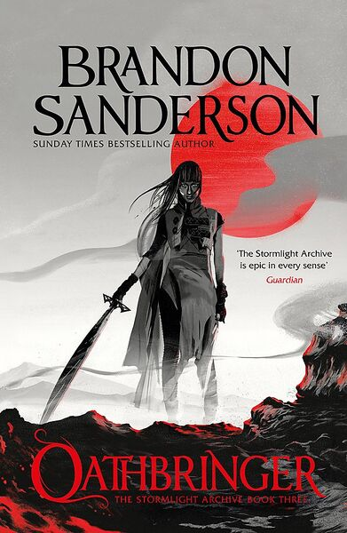
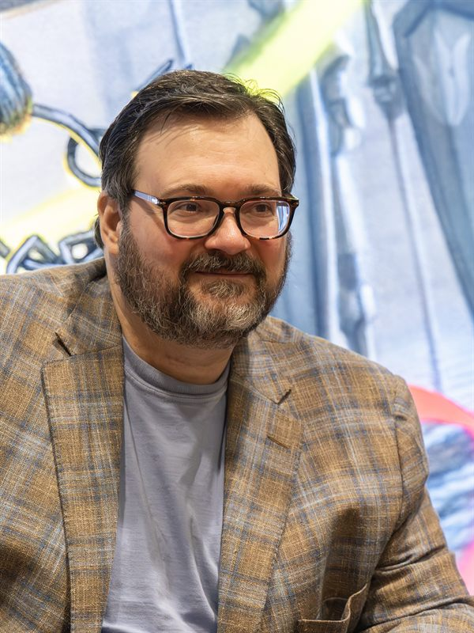
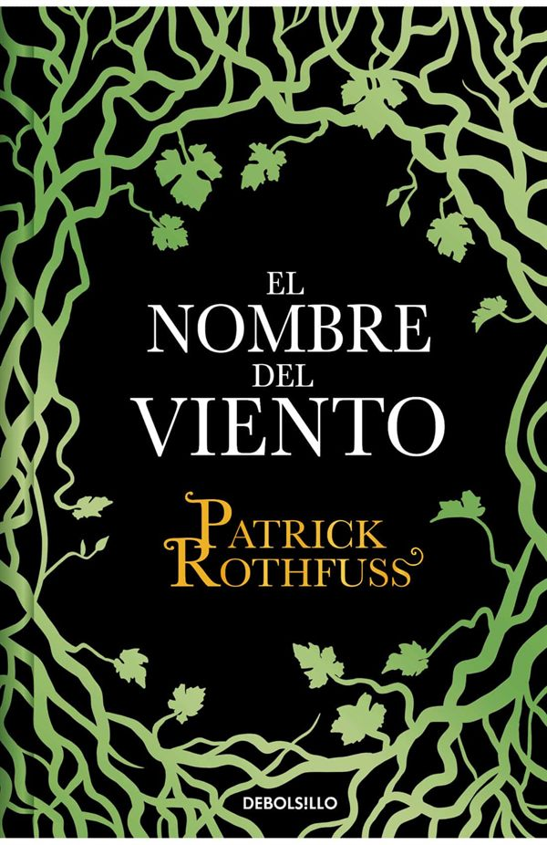
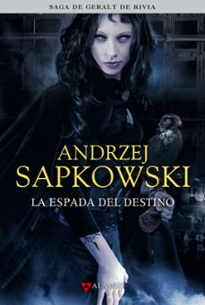
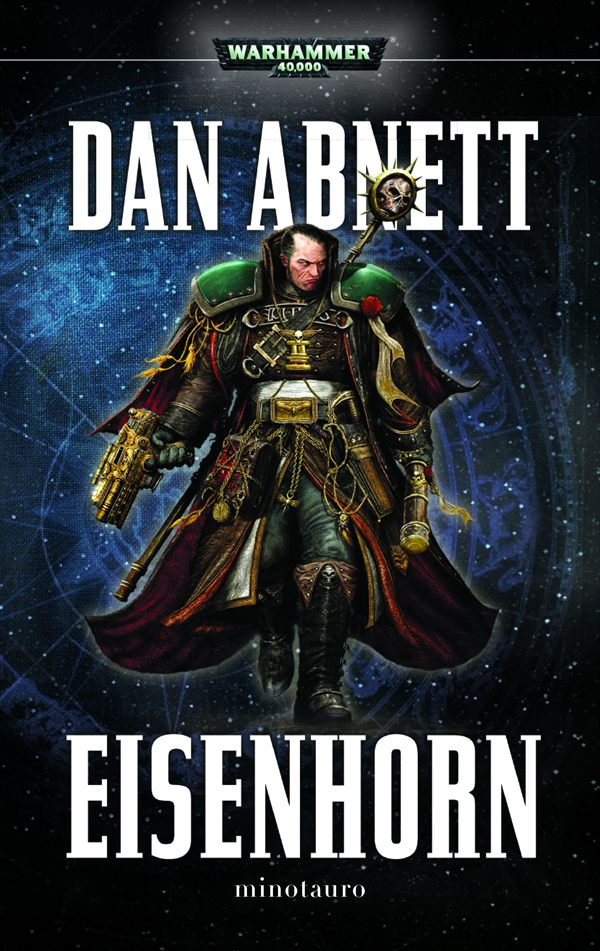
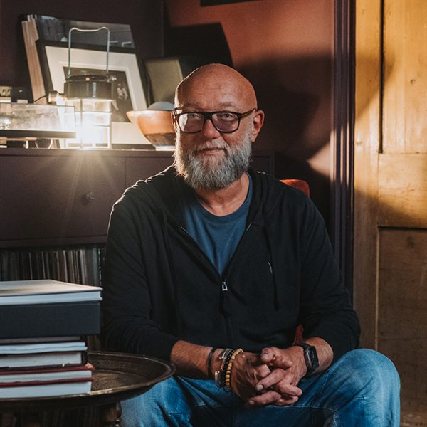

Pese a no haber sido un lector demasiado asiduo durante mi infancia, tras entrar a la universidad y aprovechar los desplazamientos de horas entre mi casa y la universidad, he descubierto un sinfín de obras de grandes autores de fantasía principalmente que han marcado mis gustos a lo largo de estos años.
Juramentada (El Archivo de las Tormentas)

Tercer volumen de la épica saga de El Archivo de las Tormentas.
Si hay un universo literario que me tiene completamente atrapado, es el Cosmere. Comencé hace bastantes años y, para la fecha en la que escribo esta web, estoy al día con la saga. Juramentada es un viaje emocional brutal donde los personajes se enfrentan no solo a enemigos imponentes, sino a sus propios demonios del pasado. La forma en la que el autor construye el mundo, detalla los sistemas de magia y entrelaza las historias es simplemente magistral. Es la clase de mundo tan rico y bien definido que resulta perfecto para inspirar campañas de rol y explorar cada rincón de Roshar.

Brandon Sanderson, el arquitecto del Cosmere.
Sanderson tiene una habilidad única para escribir finales memorables (lo que sus lectores llamamos la "Sanderlancha", que viene de Sanderson y Avalancha). Este libro en particular tiene uno de los clímax más espectaculares y satisfactorios que he leído jamás. La trama de Dalinar se comenzó a cocer desde el primer libro "El camino de los reyes" y en este libro toma un papel protagonista donde tanto Dalinar como nosotros como lectores descubrimos el pasado de Dalinar y la verdadera razón por la que es temido en todo Roshar. Un imprescindible para cualquier amante de la fantasía épica.
El Nombre del Viento

El inicio de la Crónica del Asesino de Reyes.
La historia de Kvothe destaca por una prosa casi poética. Es el propio protagonista quien relata cómo se convirtió en leyenda, combinando errores, arrogancia y momentos brillantes en la Universidad.
Patrick Rothfuss, autor de la Crónica del Asesino de Reyes.
La forma en la que Rothfuss trata la música dentro de la historia y cómo el protagonista se relaciona con ella me parece preciosa. Aunque todavía seguimos esperando la conclusión de la trilogía, el viaje de leer este primer tomo justifica sobradamente darle una oportunidad.
Quiero destacar el trabajo de Raúl Llorens en la narración de los audiolibros de esta saga. No soy un gran fan de los audiolibros, pero la narrativa de la historia en conjunto con su interpretación magistral hacen que esta obra sea única en su especie.
La Espada del Destino (Saga de Geralt de Rivia)

Segundo libro de relatos del brujo Geralt de Rivia.
Antes de las grandes novelas de la saga, las aventuras de Geralt de Rivia se contaban en formato de relatos cortos, y este libro me parece el punto álgido de ese formato. Aquí vemos a un Geralt mucho más humano, lidiando con el peso del destino y sus sentimientos hacia Yennefer y Ciri. En este libro aprendemos que los monstruos de estas historias rara vez son las bestias del bosque, a menudo son las propias personas y sus prejuicios.
Andrzej Sapkowski, creador del universo del Brujo.
Pese a las críticas que ha recibido Sapkowski sobre su narrativa demasiado cargada, me encanta el tono cínico y oscuro, mezclado con reinterpretaciones retorcidas de los cuentos de hadas clásicos. Los diálogos son afilados y las decisiones morales nunca son blanco o negro, sino un constante tono de grises donde siempre hay que elegir el mal menor.
El Ómnibus de Eisenhorn

Recopilación de la trilogía del Inquisidor Eisenhorn.
No soy un entendido de las obras de Warhammer 40K. He comenzado por esta obra y la verdad que no se me ocurre una mejor manera que desde los ojos del Inquisidor Gregor Eisenhorn del Ordo Xenos. Este volumen recopila su historia completa, mostrando cómo un agente leal y puritano del Imperio se ve obligado a cruzar líneas morales cada vez más oscuras para proteger a la humanidad de la herejía y los demonios.

Dan Abnett, uno de los autores más aclamados de Black Library.
Dan Abnett pinta un retrato increíble del día a día en el Imperio del Hombre, explorando los bajos fondos, los cultos y la política imperial. Es una lectura con tintes de novela negra y espionaje galáctico de constantes descubrimientos y sorpresas. Simplemente espectacular.